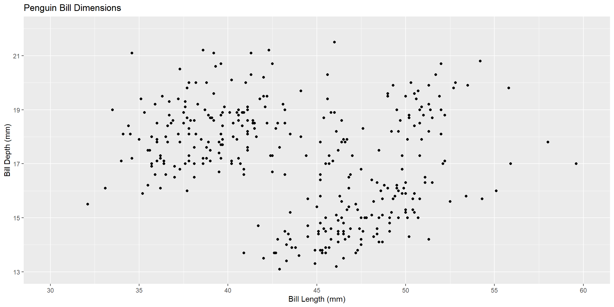
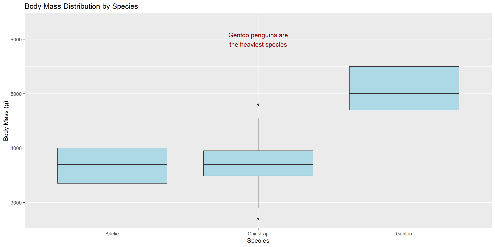
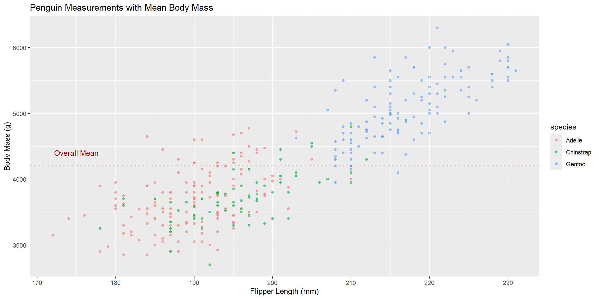
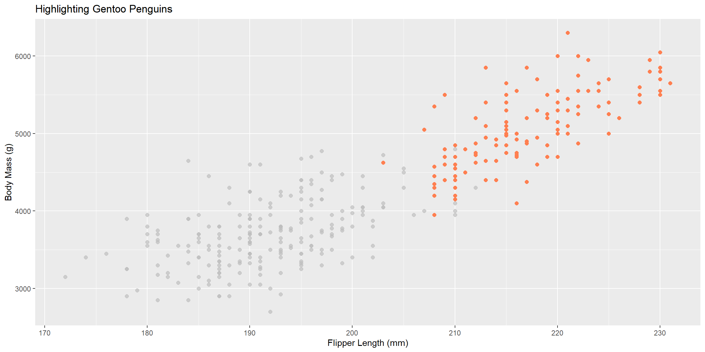

When you first create plots in R, the default settings work well for exploring your data. However, when you’re preparing visualizations for presentations, reports, or publications, you’ll want to polish them to make your message clearer and more visually appealing.
In this tutorial, we’ll learn how to customize various aspects of ggplot2 graphs including axes, colors, labels, legends, and themes. We’ll primarily use the palmerpenguins dataset, which contains measurements of three penguin species from islands in Antarctica.
First, let’s load our packages and data:
Code
library(ggplot2)
Warning: package 'ggplot2' was built under R version 4.4.3
Code
library(palmerpenguins)
Warning: package 'palmerpenguins' was built under R version 4.4.3
Code
library(dplyr)
Warning: package 'dplyr' was built under R version 4.4.3
Customizing Axes
Axes help your readers understand the scale and range of your data. Let’s explore how to modify them.
Numeric Axes
You can control numeric axes using scale_x_continuous() and scale_y_continuous(). The most useful options are:
breaks: Where to place tick marks and labels
limits: The minimum and maximum values to display
Code
# Basic plotggplot(penguins, aes(x = bill_length_mm, y = bill_depth_mm)) +geom_point() +scale_x_continuous(breaks =seq(30, 60, by =5),limits =c(30, 60)) +scale_y_continuous(breaks =seq(13, 22, by =2),limits =c(13, 22)) +labs(title ="Penguin Bill Dimensions",x ="Bill Length (mm)",y ="Bill Depth (mm)")

Tip
The seq() function creates a sequence of numbers. For example, seq(30, 60, by = 5) creates: 30, 35, 40, 45, 50, 55, 60.
Formatting Numbers
The scales package provides helpful functions for formatting axis labels:
comma: Adds commas to large numbers (1000 becomes 1,000)
dollar: Adds currency symbols
percent: Converts decimals to percentages
In the code chunk below, we create a random dataset by sampling from normal and uniform distributions for demomstrative purposes. Don’t worry, the penguins will come back in the next example!
Annotations can highlight important features in your data.
Text Annotations
Use annotate() to add text anywhere on your plot:
Code
penguin_summary <- penguins %>%group_by(species) %>%summarise(mean_mass =mean(body_mass_g, na.rm =TRUE))ggplot(penguins, aes(x = species, y = body_mass_g)) +geom_boxplot(fill ="lightblue") +annotate("text", x =2, y =6000, label ="Gentoo penguins are\nthe heaviest species",color ="darkred", size =4) +labs(title ="Body Mass Distribution by Species",x ="Species",y ="Body Mass (g)")

Adding Reference Lines
Use geom_hline() and geom_vline() for horizontal and vertical lines:
Code
mean_mass <-mean(penguins$body_mass_g, na.rm =TRUE)ggplot(penguins, aes(x = flipper_length_mm, y = body_mass_g, color = species)) +geom_point(alpha =0.6) +geom_hline(yintercept = mean_mass, linetype ="dashed", color ="darkred") +annotate("text", x =175, y = mean_mass +200,label ="Overall Mean", color ="darkred") +labs(title ="Penguin Measurements with Mean Body Mass",x ="Flipper Length (mm)",y ="Body Mass (g)")

Highlighting Specific Groups
The gghighlight package makes it easy to emphasize particular data:
Code
library(gghighlight)ggplot(penguins, aes(x = flipper_length_mm, y = body_mass_g)) +geom_point(size =2, color ="coral") +gghighlight(species =="Gentoo") +labs(title ="Highlighting Gentoo Penguins",x ="Flipper Length (mm)",y ="Body Mass (g)")

Using Themes
Themes control the overall appearance of your plot (backgrounds, gridlines, fonts, etc.).
Built-in Themes
ggplot2 includes several pre-made themes:
Code
p <-ggplot(penguins, aes(x = species, fill = island)) +geom_bar() +labs(title ="Penguins by Species and Island")# Try different themesp +theme_minimal() # Clean and simple
Code
```{r}#| warning: falsep +theme_classic() # Traditional look```
Code
```{r}#| warning: falsep +theme_dark() # Dark background```
Custom Themes with ggthemes
The ggthemes package offers many professional themes:
Code
library(ggthemes)base_plot <-ggplot(penguins, aes(x = flipper_length_mm, y = body_mass_g, color = species)) +geom_point(size =2) +labs(title ="Penguin Physical Measurements",x ="Flipper Length (mm)",y ="Body Mass (g)")# Economist stylebase_plot +theme_economist() +scale_color_economist()
---title: "Graph Customisation"format: html: fig-width: 12 fig-height: 6 code-fold: show code-tools: true code-block-bg: true code-block-border-left: "#31BAE9" toc: true code-copy: true number_sections: true echo: fenced---# IntroductionWhen you first create plots in R, the default settings work well for exploring your data. However, when you're preparing visualizations for presentations, reports, or publications, you'll want to polish them to make your message clearer and more visually appealing.In this tutorial, we'll learn how to customize various aspects of ggplot2 graphs including axes, colors, labels, legends, and themes. We'll primarily use the `palmerpenguins` dataset, which contains measurements of three penguin species from islands in Antarctica.First, let's load our packages and data:```{r}#| echo: true#| message: false#| error: falselibrary(ggplot2)library(palmerpenguins)library(dplyr)```# Customizing AxesAxes help your readers understand the scale and range of your data. Let's explore how to modify them.## Numeric AxesYou can control numeric axes using `scale_x_continuous()` and `scale_y_continuous()`. The most useful options are:- `breaks`: Where to place tick marks and labels- `limits`: The minimum and maximum values to display```{r}#| echo: true#| warning: false#| message: false# Basic plotggplot(penguins, aes(x = bill_length_mm, y = bill_depth_mm)) +geom_point() +scale_x_continuous(breaks =seq(30, 60, by =5),limits =c(30, 60)) +scale_y_continuous(breaks =seq(13, 22, by =2),limits =c(13, 22)) +labs(title ="Penguin Bill Dimensions",x ="Bill Length (mm)",y ="Bill Depth (mm)")```:::{.callout-tip}The `seq()` function creates a sequence of numbers. For example, `seq(30, 60, by = 5)` creates: 30, 35, 40, 45, 50, 55, 60.:::## Formatting NumbersThe `scales` package provides helpful functions for formatting axis labels:- `comma`: Adds commas to large numbers (1000 becomes 1,000)- `dollar`: Adds currency symbols- `percent`: Converts decimals to percentagesIn the code chunk below, we create a random dataset by sampling from normal and uniform distributions for demomstrative purposes. Don't worry, the penguins will come back in the next example!```{r}# Create sample dataset.seed(42)population_data <-data.frame(city =paste("City", 1:40),population =rnorm(40, 250000, 80000),employment_rate =runif(40, 0.55, 0.85),median_income =rnorm(40, 65000, 15000))ggplot(population_data, aes(x = population, y = employment_rate)) +geom_point(color ="steelblue", size =3, alpha =0.6) +scale_x_continuous(labels = scales::comma) +scale_y_continuous(labels = scales::percent) +labs(title ="Population vs Employment Rate",x ="City Population",y ="Employment Rate")```## Categorical AxesFor categorical variables, use `scale_x_discrete()` or `scale_y_discrete()`. Returning to our penguins dataset:```{r}# Apply categorical variable scalingggplot(penguins, aes(x = species)) +geom_bar(fill ="coral") +scale_x_discrete(labels =c("Adélie\nPenguin", "Chinstrap\nPenguin", "Gentoo\nPenguin")) +labs(title ="Number of Penguins by Species",x ="Species",y ="Count")```:::{.callout-note}`\n` creates a line break in text labels.:::## Date AxesWorking with dates requires `scale_x_date()` or `scale_y_date()`. We use the economics dataset for this:```{r}# Using the economics datasetggplot(economics, aes(x = date, y = unemploy /1000)) +geom_line(color ="darkblue", linewidth =1) +scale_x_date(date_breaks ="10 years",date_labels ="%Y") +labs(title ="US Unemployment Over Time",x ="Year",y ="Unemployed (thousands)")```:::{.callout-note}We use `date_` for breaks and labels for dates.:::Common date format codes:| Code | Meaning | Example ||------|---------|---------|| %d | Day of month | 01-31 || %m | Month number | 01-12 || %b | Abbreviated month | Jan || %B | Full month | January || %y | 2-digit year | 24 || %Y | 4-digit year | 2024 |# Working with ColorsColors can make your plots more engaging and help distinguish between groups.## Setting Colors ManuallyUse `color` for points and lines, and `fill` for bars and areas:```{r}#| echo: true#| warning: false#| message: false# Single colorggplot(penguins, aes(x = bill_length_mm, y = bill_depth_mm)) +geom_point(color ="darkgreen", size =2) +labs(title ="Penguin Bill Measurements")```To assign specific colors to categories, use `scale_color_manual()` or `scale_fill_manual()`:```{r}#| echo: true#| warning: false#| message: falseggplot(penguins, aes(x = species, fill = species)) +geom_bar() +scale_fill_manual(values =c("Adelie"="darkorange","Chinstrap"="purple","Gentoo"="cyan4")) +labs(title ="Penguin Species Count",x ="Species",y ="Count",fill ="Species")```## Using Color PalettesPre-designed color palettes might be a starting point to inspire the final aesthetic you choose for your graph.### ColorBrewer PalettesColorBrewer provides carefully designed color schemes:```{r}#| echo: true#| warning: false#| message: falseggplot(penguins, aes(x = species, fill = island)) +geom_bar() +scale_fill_brewer(palette ="Set2") +labs(title ="Penguin Species by Island",x ="Species",y ="Count",fill ="Island")```### Viridis PalettesViridis palettes are *colorblind-friendly* and print well in grayscale:```{r}#| echo: true#| warning: false#| message: falseggplot(penguins, aes(x = species, fill = island)) +geom_bar() +scale_fill_viridis_d() +labs(title ="Penguin Species by Island",x ="Species",y ="Count",fill ="Island")```:::{.callout-note}Use `_c` for continuous variables (numbers) and `_d` for discrete variables (categories).:::# Customizing Points and Lines## Point ShapesChange point shapes with the `shape` parameter:```{r}#| echo: true#| warning: false#| message: falseggplot(penguins, aes(x = bill_length_mm, y = bill_depth_mm, shape = species)) +geom_point(size =3) +labs(title ="Bill Dimensions by Species",shape ="Species")```Shapes 21-25 allow both fill and border colors:```{r}#| echo: true#| warning: false#| message: falseggplot(penguins, aes(x = bill_length_mm, y = bill_depth_mm, fill = species)) +geom_point(shape =21, size =3, color ="black") +labs(title ="Bill Dimensions by Species")```## Line TypesYou can modiify line appearance with `linetype`:```{r}ggplot(economics, aes(x = date)) +geom_line(aes(y = unemploy), linetype ="solid", color ="blue") +geom_line(aes(y = unemploy *1.1), linetype ="dashed", color ="red") +labs(title ="Unemployment Trends",y ="Number Unemployed")```# Adding AnnotationsAnnotations can highlight important features in your data.## Text AnnotationsUse `annotate()` to add text anywhere on your plot:```{r}#| echo: true#| warning: false#| message: falsepenguin_summary <- penguins %>%group_by(species) %>%summarise(mean_mass =mean(body_mass_g, na.rm =TRUE))ggplot(penguins, aes(x = species, y = body_mass_g)) +geom_boxplot(fill ="lightblue") +annotate("text", x =2, y =6000, label ="Gentoo penguins are\nthe heaviest species",color ="darkred", size =4) +labs(title ="Body Mass Distribution by Species",x ="Species",y ="Body Mass (g)")```## Adding Reference LinesUse `geom_hline()` and `geom_vline()` for horizontal and vertical lines:```{r}#| echo: true#| warning: false#| message: falsemean_mass <-mean(penguins$body_mass_g, na.rm =TRUE)ggplot(penguins, aes(x = flipper_length_mm, y = body_mass_g, color = species)) +geom_point(alpha =0.6) +geom_hline(yintercept = mean_mass, linetype ="dashed", color ="darkred") +annotate("text", x =175, y = mean_mass +200,label ="Overall Mean", color ="darkred") +labs(title ="Penguin Measurements with Mean Body Mass",x ="Flipper Length (mm)",y ="Body Mass (g)")```## Highlighting Specific GroupsThe `gghighlight` package makes it easy to emphasize particular data:```{r}#| echo: true#| warning: false#| message: falselibrary(gghighlight)ggplot(penguins, aes(x = flipper_length_mm, y = body_mass_g)) +geom_point(size =2, color ="coral") +gghighlight(species =="Gentoo") +labs(title ="Highlighting Gentoo Penguins",x ="Flipper Length (mm)",y ="Body Mass (g)")```# Using ThemesThemes control the overall appearance of your plot (backgrounds, gridlines, fonts, etc.).## Built-in Themesggplot2 includes several pre-made themes:```{r}#| echo: true#| warning: false#| message: falsep <-ggplot(penguins, aes(x = species, fill = island)) +geom_bar() +labs(title ="Penguins by Species and Island")# Try different themesp +theme_minimal() # Clean and simple``````{r}#| warning: falsep +theme_classic() # Traditional look``````{r}#| warning: falsep +theme_dark() # Dark background```## Custom Themes with ggthemesThe `ggthemes` package offers many professional themes:```{r}#| echo: true#| warning: false#| message: falselibrary(ggthemes)base_plot <-ggplot(penguins, aes(x = flipper_length_mm, y = body_mass_g, color = species)) +geom_point(size =2) +labs(title ="Penguin Physical Measurements",x ="Flipper Length (mm)",y ="Body Mass (g)")# Economist stylebase_plot +theme_economist() +scale_color_economist()``````{r}#| echo: true#| warning: false#| message: false# FiveThirtyEight stylebase_plot +theme_fivethirtyeight()```# Combining Multiple PlotsThe `patchwork` package lets you arrange multiple plots together:```{r}#| echo: true#| warning: false#| message: falselibrary(patchwork)# Create three plotsp1 <-ggplot(penguins, aes(x = species, fill = species)) +geom_bar() +scale_fill_viridis_d() +labs(title ="Species Count") +theme_minimal() +theme(legend.position ="none")p2 <-ggplot(penguins, aes(x = species, y = body_mass_g, fill = species)) +geom_boxplot() +scale_fill_viridis_d() +labs(title ="Body Mass by Species",y ="Body Mass (g)") +theme_minimal() +theme(legend.position ="none")p3 <-ggplot(penguins, aes(x = flipper_length_mm, y = body_mass_g, color = species)) +geom_point(alpha =0.6) +scale_color_viridis_d() +labs(title ="Flipper Length vs Body Mass",x ="Flipper Length (mm)",y ="Body Mass (g)") +theme_minimal()# Combine plots: | means side-by-side, / means stacked(p1 | p2) / p3 +plot_annotation(title ="Palmer Penguins: A Multi-faceted View",theme =theme(plot.title =element_text(size =16, face ="bold")) )```The `&` operator applies settings to all plots:```{r}#| echo: true#| warning: false#| message: false(p1 | p2) / p3 &theme_light()```# Further Resources- [ggplot2 documentation](https://ggplot2.tidyverse.org/)- [R Graphics Cookbook](https://r-graphics.org/)- [Data Visualization: A Practical Introduction](https://socviz.co/)- [Fundamentals of Data Visualization](https://clauswilke.com/dataviz/)